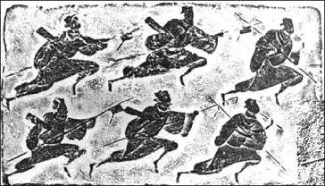

学汉语 | 风光流转浑如昨——体育常用语的由来
 309
309
冠军
远在公元前209 年，中国历史上爆发了第一次大规模的农民起义。当时楚国有一位奋起反抗赢秦暴政的大将宋义，英勇善战，十分威武，秦兵屡屡败于他的手下。由于他战功赫赫，位居诸将之上，于是楚军将士赠给他一个光荣的称号：“卿子冠军”。《史记·项羽本记》就有这样的记载：“诸别将皆属宋义，号为卿子冠军。”这是中国历史上第一个荣获“冠军”称号的人。到了汉代，冠军一词继续沿用了下来。据《汉书·卫青霍去病传》载，霍去病年十八，与匈奴初次交锋，一往无前，勇冠三军，汉武帝封其为“冠军侯”。汉代以后，战功卓著的武将，也都采用了冠军为官衔。从魏晋迄南北朝各代，都设有“冠军将军”，唐朝也设有“冠军大将军”的官衔。直到清朝，护卫帝王的銮仪卫及旗手卫的首领，也称为“冠军使”。
锦标
本意指锦制的标旗，乃唐代竞渡比赛的取胜标志，亦名“彩标”。竞渡即赛龙舟，是我国传统的体育项目，早在春秋战国时期便已有之，相传是为了纪念伟大的诗人屈原。到了唐代，更演变为一种极其盛大而隆重的赛事。当时，人们为了裁定名次，便在水面的终点插上一杆锦制的标旗，是为锦标。竞渡船只以首先夺取锦标为胜，故这一竞赛又称为“夺标”，而“夺锦标”遂亦成为大魁天下之喻词。后来，“标”更成为冠军的代名词，夺取“锦标”者，也因其胜利者的荣誉而受到尊重。
明代《三才图会》中的缘竿图
蝉联
汉代杨雄在《方言》中说：“蝉，续也。”蝉是一种善鸣的昆虫，它有薄而透明的四个翅，可以飞翔，俗名“知了”。蝉在成长过程中，它的幼虫栖息在土里，靠针状口器刺入树根、树枝来吸收营养。当幼蝉长大，便脱壳而出，蜕变为成蝉，展翅飞去，到处鸣唱。人们常说的“金蝉脱壳”指的就是这种蜕变。无论是脱壳之前还是脱壳之后，蝉总是蝉，只是幼虫变作成虫而已。但是，脱壳方法独特，幼虫留下躯壳，成虫以原貌从躯壳中脱颖而出，在原有基础上得以延伸和保持。因此，人们便以蝉的蜕变现象，比喻世间连续保持的事物，或是联贯取得的成果，遂有“蝉联”一词。如唐代杨炯《遂州孔子庙堂碑》：“齐九龙而阔步，一门钟豹变之荣；袭五公而长驱，四代赫蝉联之祉。”现在蝉联多用于指在两届或几届体育比赛保持原有的荣誉称号，几次连续取得同一比赛的冠军称为“蝉联冠军”。
逐鹿
指群雄并起，争夺天下，出自于《史记·淮阴侯列传》：“秦失其鹿，天下共逐之，于是高材疾足者先得焉。”裴骃集解引张晏曰“以鹿喻帝位也。”后因以“逐鹿”喻争夺统治权。《晋书·凉武昭王李玄盛传》：“于是人希逐鹿之图，家有雄霸之想。”宋程大昌《演繁露续集·谈助·逐鹿》：“秦失其鹿，天下共逐。以天下喻鹿，语虽出于汉世，然《春秋》有其语矣。《襄十四年》：戎子驹支曰：“ 淆之师，‘ 秦师不复，我诸戎实然。譬如捕鹿，晋人角之，诸戎掎之，与晋踣之’，则其语尚矣”。不独是也，《六韬》：“太公谓文王曰：‘取天下若逐野鹿，而天下共分其肉。则逐鹿之说久矣，不在汉世也。’”清李渔《奈何天·分扰》：“ 两下里分头逐鹿，各仗韩卢，并倚昆吾。”周恩来《春日偶感》诗之一：“中原方逐鹿，博浪踵相踪。”鹿喻天下、帝位、政权等，因此后人便将体育比赛争夺优胜称为“逐鹿”。

急脚递东汉伍伯画像砖拓本
执牛耳
语出《左传·哀公十七年》：“诸侯盟，谁执牛耳？”古代诸侯会盟，割牛耳取血，以珠盘盛牛耳，主盟者执盘，使与盟会者以血涂口（歃血），以示诚信不渝。因此称盟主为“执牛耳”，后来人们将体育比赛中的获胜者亦称为“执牛耳”。
占鳌
唐宋时期，皇宫正殿前台阶正中的石板上镌有巨鳌。科举殿试结束后发榜时，进士们站在台阶下迎榜，而状元则独立于鳌头上迎榜，鳌头可谓状元的“专用席位”。五代李瀚《留题座主和凝旧阁》：“座主登庸归凤阙，门生批诏立鳌头。”现在人们便用“占鳌”喻指体育比赛中取得第一名。
《蹴鞠图》明万历三十七年（公元1609年）刻本
夺魁
魁即魁星，北斗七星的前四颗，故魁亦有首之意。我国古代科举考试中将第一名状元称为“魁甲”。体育比赛中的“夺魁”即由此而来。
问鼎
商代对表示贵族身份的鼎有严格的规定，“九鼎”只有天子才能使用。后来，周王室衰微，诸侯群雄并起觊觎，以楚庄王为最，曾向周天子的使者询问传国宝鼎“九鼎”的大小轻重。《左传·宣公三年》：“楚子伐陆浑之戎，遂至于雒，观兵于周疆。定王使王孙满劳楚子，楚子问鼎之大小轻重焉。”禹铸九鼎，三代视之为国宝。楚王问鼎，有取而代周之意。后遂称图谋王位为“问鼎”，现在则将体育比赛中有意争夺第一名称为“问鼎”。
挂靴
《南史·隐逸传》载：“南梁，陶弘景脱朝服，挂神武门，上表辞禄。”后“挂冠”引申为辞官。“挂靴”一词由“挂冠”转义而来，顾名思义，即把球靴挂起来，再也不穿了。特指足球运动员退役，结束运动生涯，不再参加正规训练和比赛，有时亦用于滑冰、田径等运动员。
满贯
本义指钱币穿满绳子，比喻达到了极限，多指罪恶。贯，穿钱币的绳子。《韩非子·说林下》：“有与悍者邻，欲卖宅而避之。人曰：‘是其贯将满矣，子姑待之。’答曰：‘吾恐其以我满贯也。’遂去之。”汉·王符《潜夫论·忠贵》：“而后人贪权冒宠，蓄积无极，思登颠陨之台，乐循覆车之迹，愿裨福祚，以备员满贯者，何世无之？”清·袁枚《新齐谐·汉高祖弑义帝》：“羽以坑咸阳卒二十万，上帝震怒，戮于阴山，受无量罪，今始满贯，方得诉冤。”后来“满贯”一词亦被借用为麻将术语，指凑满番数或同花式的牌而摊牌取胜。茅盾《多角关系》十三：“‘啊！三抬！满贯了！满贯了！’忽然那边牌桌上轰起了这样的叫声。”丁玲《庆云里的一间小房里》：“吃黑呢，只除了人没输去，什么都精光了。背了三个满贯，五个清一色。”罗广斌、杨益言《红岩》第二二章：“ 你又坐在这里，尽是烟！快去打牌，我刚才和了副满贯。”现今，“满贯”一词又再度被借用为体育用语“大满贯”，多指在网球、乒乓球等体育项目上囊括了所有重要赛事的冠军，获得了所有的荣誉。如乒乓赛事可分世界、洲际、国家三个层次。世界比赛有四大赛：奥运会、世乒赛、世界杯与总决赛；洲际赛事有亚洲锦标赛、欧洲锦标赛；国家比赛有各国的全国锦标赛以及中国特有的全运会等。目前真正意义上的乒乓球大满贯只有邓亚萍一人，她是真正集所有冠军于一身。
乌龙
即乌龙球，常用足球术语，英语为“own goal”，指自进本方球门的球，多由于本方球员误打误撞所致，故又有成语“自摆乌龙”。“乌龙”一词源于广东的一个民间传说：久旱之时，人们祈求青龙降下甘露，以滋润万物，谁知，青龙未至，乌龙现身，反而给人们带来了灾难。由于粤语“乌龙”一词的发音与英语“own goal”相近，且粤语“乌龙”本身即有“搞错、乌里巴涂”等意思，与足球场上的误入情形不谋而合，于是大约在上个世纪六、七十年代，香港记者便在报道中以“乌龙”来翻译“own goal”。
来源：国学时代